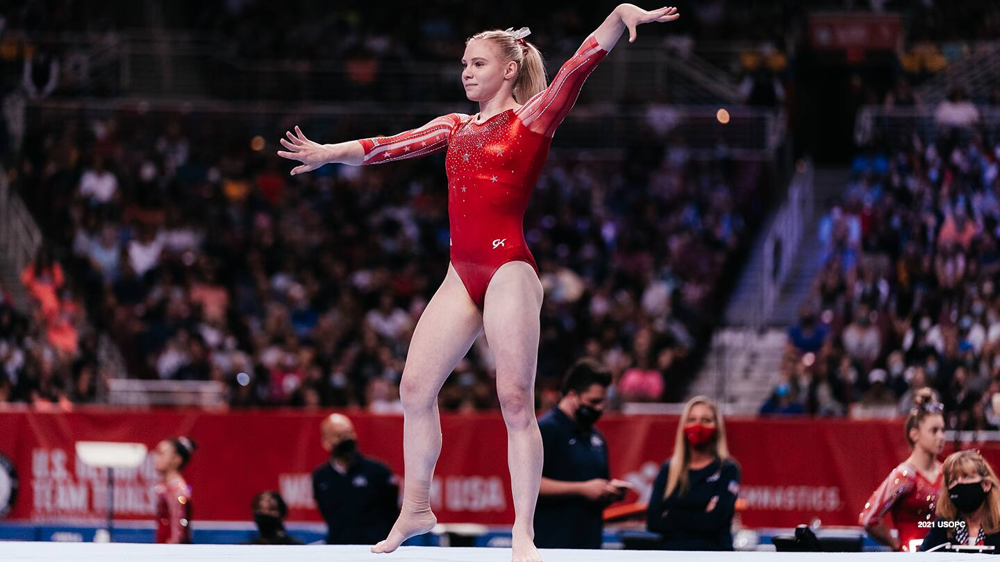
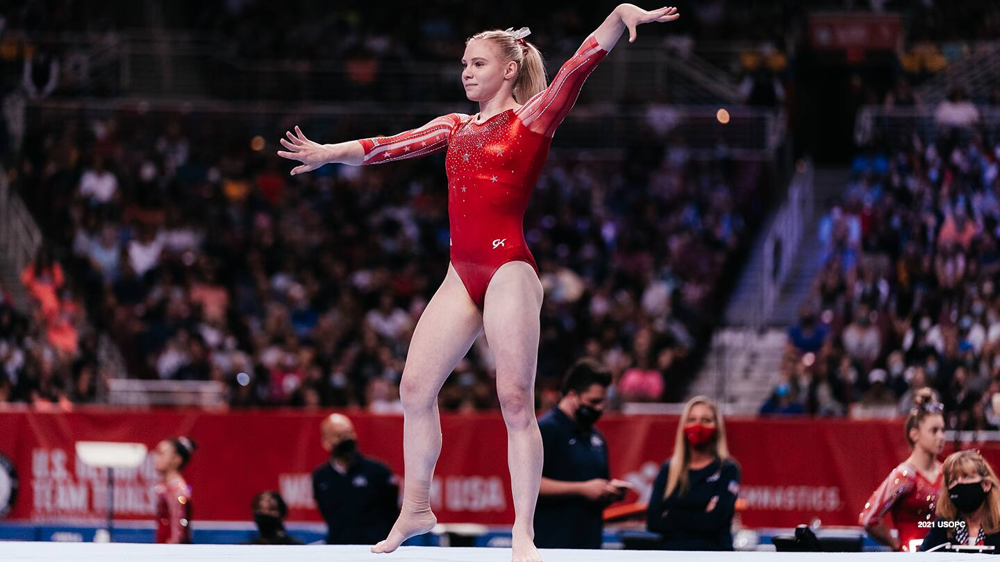
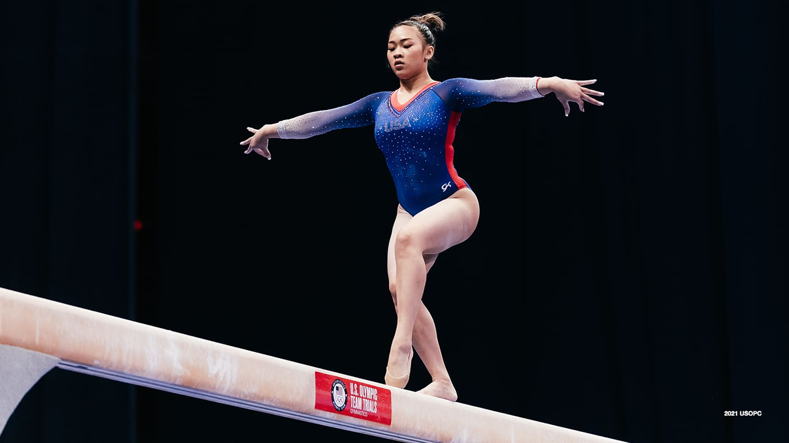
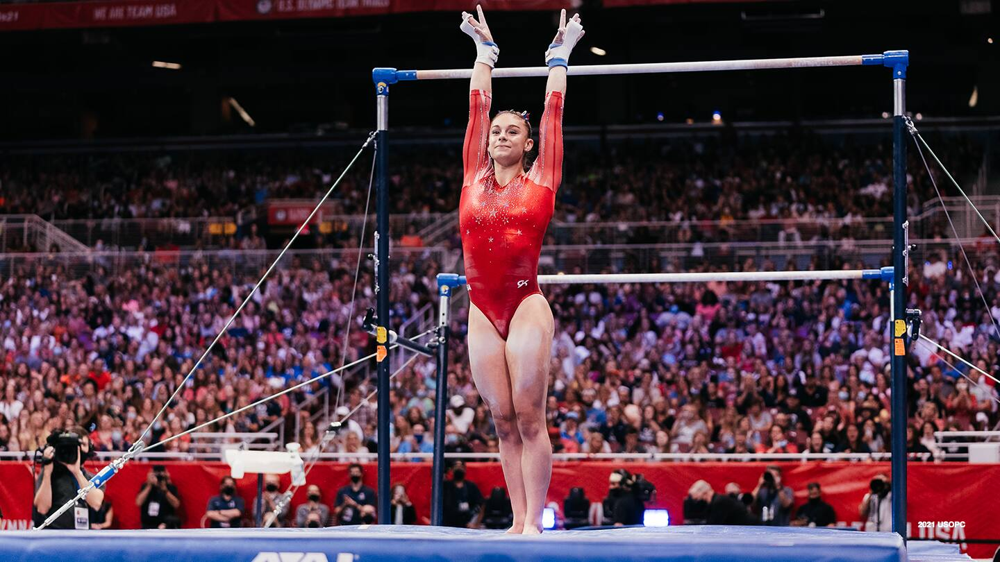
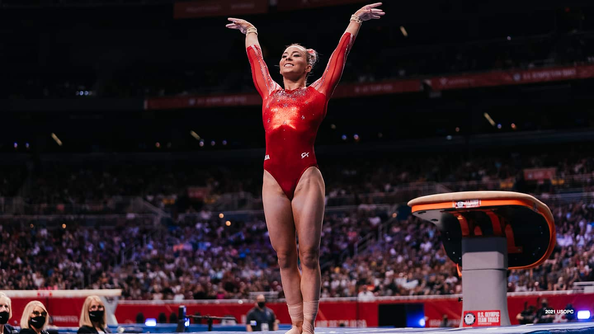
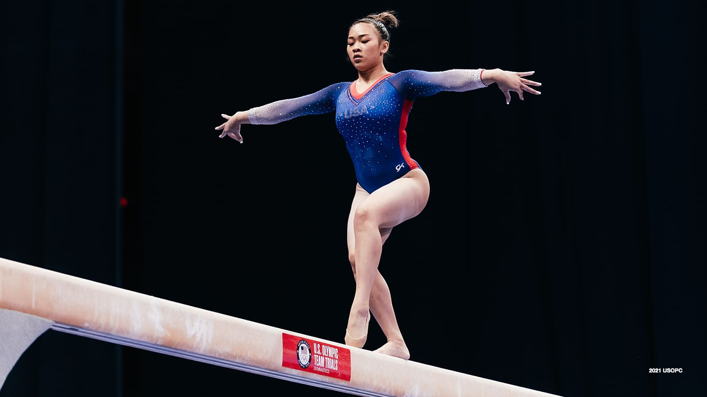
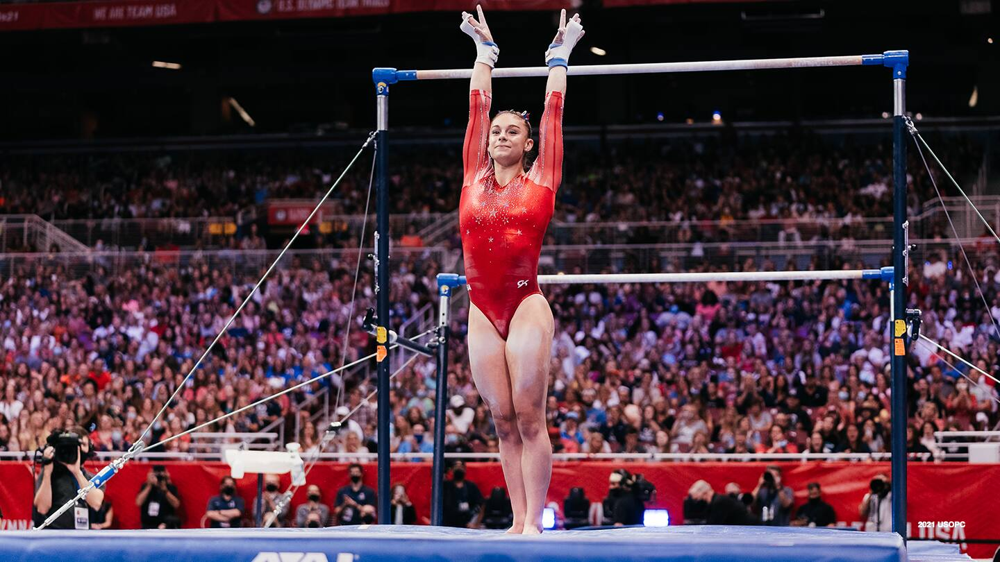
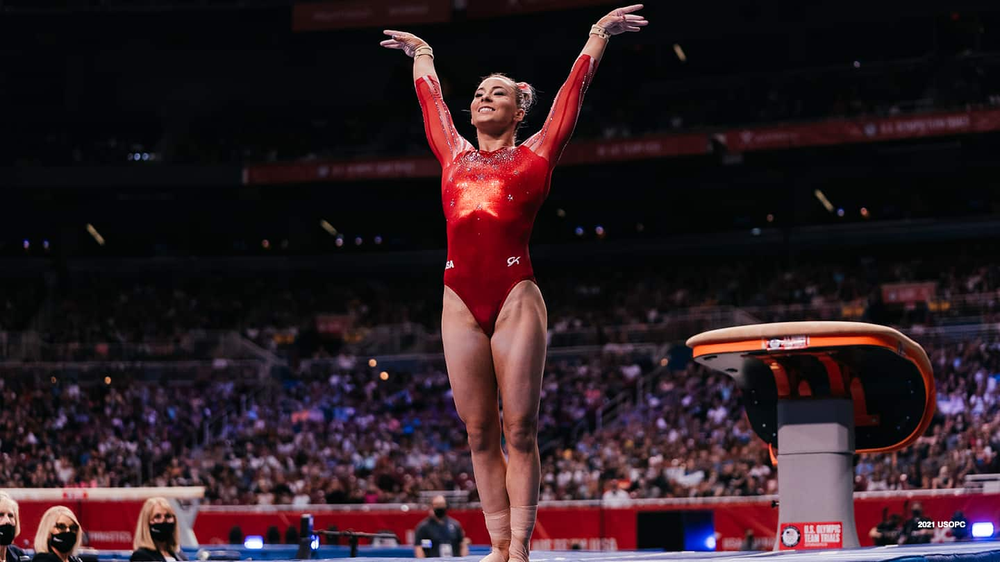

 





The women's artistic team all-around event at the 2020 Summer Olympics was held on 25 and 27 July 2021 at the Ariake Gymnastics Centre. There were 12 teams of 4 gymnasts each.
The competition was won by the Russian athletes competing as the Russian Olympic Committee (ROC), the 2016 silver medalists, when they competed as Russia. It was the first women's team all-around title for the Russian team since 1992, when it competed as the Unified Team. They led throughout the competition despite two falls on balance beam in the third rotation. The United States, the two-time defending champions and 2019 world champions, were second. Notably, top American gymnast Simone Biles withdrew from competing following the first rotation due to health concerns, and the three remaining American athletes had to alter their planned lineups and routines. The bronze was won by Great Britain, which displaced Italy from the bronze medal position in the last rotation. Great Britain have not medaled in the women's team all-around since 1928, when they won bronze.
ROC is the first nation to win both the men's and women's team all-around titles at the same Olympics since China did so at the 2008 Summer Olympics.
The medals for the competition were presented by Andrew Parsons, Brazil; IOC Executive Board Member, and the medalists' bouquets were presented by Vasily Titov, Russia; FIG Vice-President.